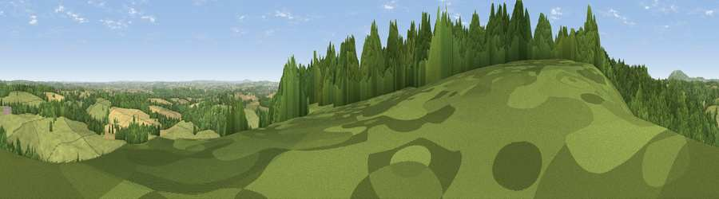

Viewpoint near Willey
#12069 in England · top 29% of its area beats it · near WilleyThe view, rendered

A 360° render of this exact spot computed from the terrain model, tree cover and land cover — summer colours, afternoon light, calibrated against photographs of famous viewpoints. Real trees, hedges and buildings will differ in detail.
The panorama
Grey silhouette: terrain skyline in each direction (720 bearings, Earth curvature and refraction included). Dashed green: skyline with trees (+15 m) and buildings (+8 m) as obstacles. Blue strip: how far the ground is visible on each bearing.
Where the view opens
Wedge length = distance to the farthest visible ground on that bearing (vegetation-aware). Rings at 10, 25 and 50 km.
What fills the view
60% woodland · 29% grassland · 7% cropland · 3% water ·
Angular shares of the visible panorama (visual magnitude), not map area. Landscape diversity 0.43 (0–1 Shannon).
Key numbers
More beautiful places nearby
The staircase of upgrades: each row has a higher view potential than everything closer. Driving times are estimates from straight-line distance, calibrated against real road routing — check an actual route before setting out.
| Place | Direction | Drive | Score |
|---|---|---|---|
| Viewpoint near Willey | SSE · 0 km | ~1 min | 61.0 |
| Viewpoint near Much Wenlock | NW · 4 km | ~8 min | 69.2 |
| Viewpoint near Homer | NW · 6 km | ~12 min | 71.9 |
| Viewpoint near Homer | WNW · 6 km | ~12 min | 74.5 |
| Viewpoint near Harley | WNW · 7 km | ~14 min | 79.9 |
| Viewpoint near Little Wenlock | NNW · 11 km | ~20 min | 86.6 |
| North Hill | SSE · 53 km | ~74 min | 86.8 |
| Worcestershire Beacon | SSE · 54 km | ~76 min | 87.1 |
52.58036, -2.49323 · source: screening · position refined by local search. Computed location — check access rights before visiting.